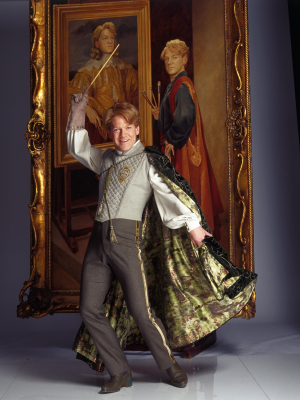

Біографія
"Гілдерой Локхарт – видатний чарівник, автор численних бестселерів і майстер магічних мистецтв. Його ім'я стало символом хоробрості та невгамовного прагнення до перемоги над темними силами. Народився у сім'ї чарівників, Гілдерой із юних років виявляв цікавість до пригод, а його магічні здібності розвивалися блискавично. Здобув освіту в Гоґвортській школі чарів і чаклунства, де вперше проявив свій талант і харизму. Після закінчення школи Локхарт вирушив у незабутню подорож світом, під час якої знищив численні темні істоти, допоміг безлічі маглів і здобув чимало нагород. Його здобутки увічнені у численних книгах, кожна з яких стала справжнім бестселером. Сьогодні Гілдерой Локхарт є одним з найшанованіших чарівників у магічному суспільстві, а його твори надихають нове покоління юних чарівників на подвиги й відвагу!"
Книги
"Мої магічні перемоги"
У цій книзі Гілдерой Локхарт розповідає про свої найвеличніші досягнення: від перемоги над тролями в Альпах до приборкання духів у древніх замках Шотландії. Прочитавши цю книгу, ви зрозумієте, чому Локхарт є найулюбленішим героєм сучасності.
"Як я переміг перевертня"
Це захоплююча розповідь про те, як Гілдерой самотужки подолав зграю перевертнів, застосувавши свою геніальну тактику й безстрашність. Від хвилюючих моментів перетворення до приголомшливої перемоги – ця книга вражає і надихає.
"Тропічні чари і як я їх підкорив"
Від екзотичних джунглів до вулканічних островів – Локхарт веде читача по слідах власних подвигів у тропічних країнах. Тут ви знайдете розповідь про битви з невідомими магічними істотами, а також про його неабиякі дипломатичні здібності, що допомогли йому здобути пошану місцевих чаклунів.
Події
Зустрічі з читачами:
Гілдерой Локхарт проводить регулярні автограф-сесії в провідних магічних книгарнях. Приєднуйтесь до наступної зустрічі, щоб отримати підпис від самого маестро чарівних пригод!
Майстер-класи з магічної досконалості:
Локхарт ділиться своїми секретами успіху в чарівному мистецтві. Чи це ваші перші кроки у магії, чи ви вже досвідчений чаклун – цей майстер-клас надихне вас на нові досягнення.
Контакти
Зв’яжіться з Гілдероєм Локхартом, вашим улюбленим автором чарівних пригод!
E-mail: gil.lokhart@magicmail.com
Поштова сова: Відправляйте листи на адресу: Лондон, Провулок Чарівників, буд. 9¾, офіс Гілдероя Локхарта, для вручення особисто
Чарівний телефон: +44 (0)777-CHARMS (застереження: працює лише в магічних зонах)
"Залиште свої побажання та відгуки у формі нижче – Гілдерой обов'язково відповість найвідданішим шанувальникам!"